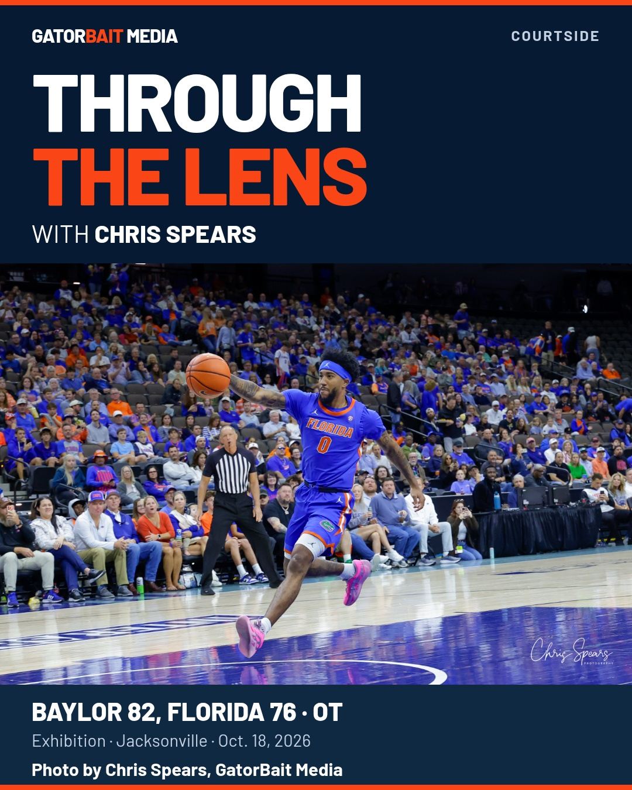

Chris's courtside column.
All 16 photographs.
Story and gallery published. Social artwork is ready in Wix. Facebook and Instagram publication is blocked by their expired Meta session.
Open the live column and gallery →


What shipped
- Chris's original column and byline, with a credited cover and four inline photos.
- Full 16-photo native gallery: one column on phones, three on desktop, uncropped FIT thumbnails and fullscreen viewing.
- Alt text and visible photo credits. No generated athletes or altered game photography.
- One factual clarity correction: Aberdeen's free throw before the turnover and tying jumper.
- Basketball label corrected for this story; RSS remains newest first. The existing publication-feed workflow completed successfully.
Social delivery
Both Wix social account reads fail with Meta OAuth 190/460: the session was invalidated. Metricool has no connected social network; Windsor has no organic social account. No working browser connector is exposed.
No social post was sent or scheduled. Reconnect the existing Meta connection in Wix, confirm the real Page and recent posts, then publish the prepared native packet once. No paid boost is authorized.
Caption, engagement question, alt, links and delivery state · Creative assets
Verification and limits
The public story returned HTTP 200. Real Chromium checks at 390, 430, 1366 and 1920 loaded all 16 gallery images and four inline photographs without document overflow or page errors. Native gallery expansion was exercised. These are browser viewport checks; a physical iPhone was not tested. Expansion succeeded after scrolling through the photos; an immediate click after jumping directly to the gallery was inconsistent in a later check, so instant expansion under every loading condition is not certified.
Gallery loading evidence · Final sport-label and homepage check · Fact ledger
Native Wix's fullscreen gallery combines the four inline photos with the 16-item gallery. Its counter can therefore show 20 items; the gallery contains 16 distinct original photographs. Cookie/signup overlays were dismissed locally for final visual checks; their production configuration was unchanged.
The story was published at 11:26 p.m. ET on Oct. 18 (03:26:08 UTC Oct. 19). Both blog email alerts were INACTIVE immediately before the post write. No subscriber email, Spaces push, account connection, automation switch, price change or Wix site publish occurred.
Sources and rollback
Game facts: UF recap and official box score. Photography: Chris Spears' Oct. 18 Wix gallery; source manifest.
Post template 14a887e3: revision 20 → 21, fingerprint 7003636d → 2f29f770, 14,829 characters. Only this canonical path was added to the existing basketball label exception. Restore revision 20 HTML with a fresh revision/fingerprint guard and ESSENTIAL retained if necessary. No other page label changes.
Article source and exact publication candidate are retained for a targeted repair. Do not unpublish or delete the live column as an automatic rollback. Preserve its first publication date, author, original media and verified free-throw correction.